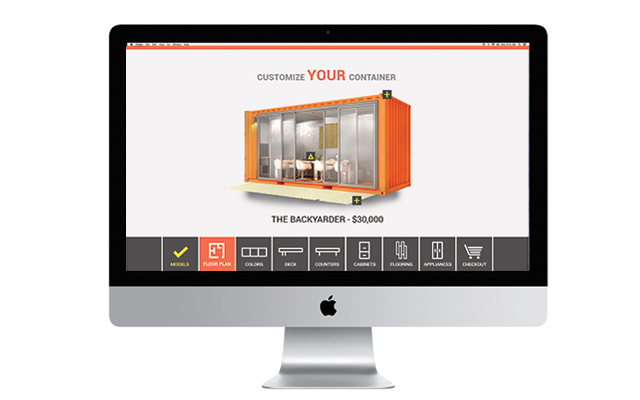
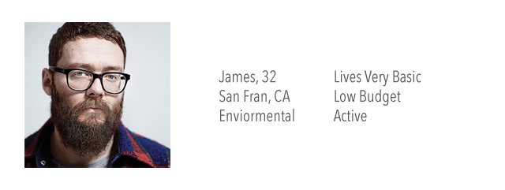
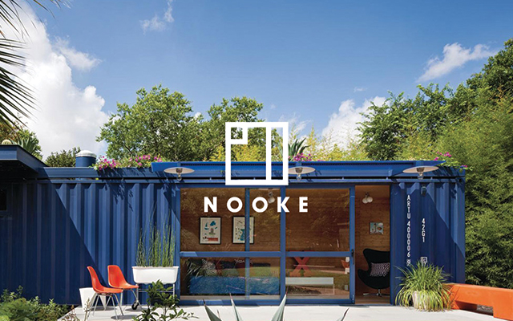
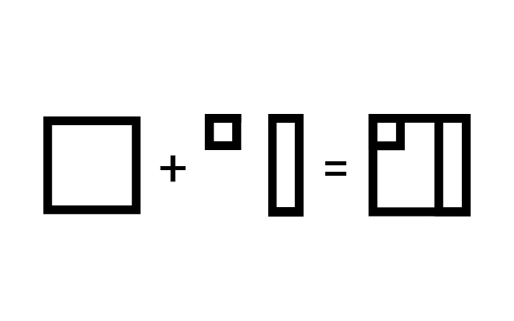
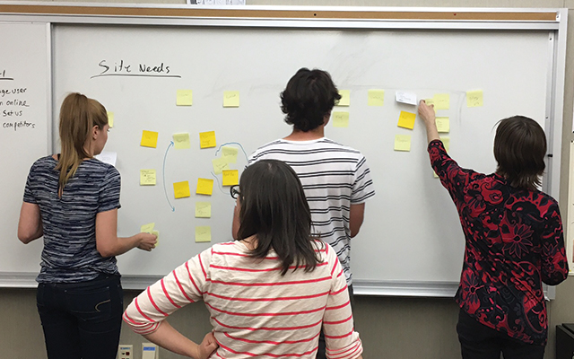
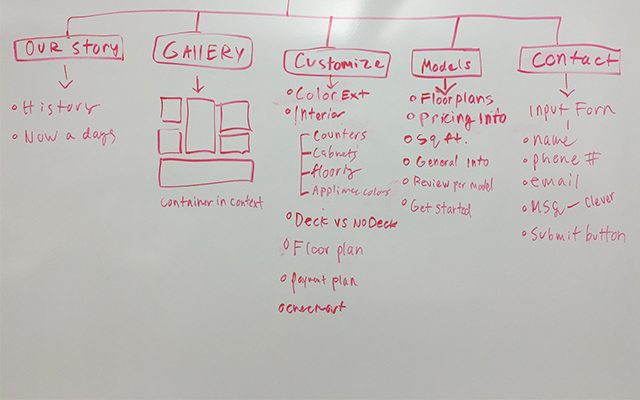

Nooke - UX & UI

THE PROJECT
This project was to done for a client based out of Spokane that specializes in container homes. Our job was to produce a website and branding that met all of the needs of our customers.
MY ROLE
Art director and head of UX. I was in charge of leading UX workshops to teach other student designers about the importance of UX. I also designed all web assets and pushed the branding in a modern sleek design.
GOAL
Our primary objective was to create an engaging website that allows users to order and customize their own container homes. We set our major focus on ensuring that the user experience was quick, simple, and painless.
RESEARCH
We began our research by collecting information on our target users. Specifically, we wanted to determine what our users were looking for when customizing products. We did our fair share of digging, to really understand our users. Once understanding our users better we conducted a few short interviews to get a sample of our target customers. These were 25-35 year olds.
Major Research Findings
The designs had to be functional and have strong visual presence.
Many of the target users are busy and do not spend much time at home.
The fact that container homes produced a small footprint was a strong selling point.
Personas
From the information we had gathered we developed personas to help us further understand our users.

PROCESS
We began with branding the company. We knew that our logo was going to have equal importance as anything else we designed. Our concept was to begin with a container, add your own personal elements and then you have created your Nooke.


Information Architecture
Once we had completed the branding we did some work on the information architecture. We began by brainstorming as many elements for the site as possible and then narrowed it down to what was really needed.


After finishing up the site map we produced user flows to see how our users would navigate through the site. Wireframes were then created to lay the base for design.(Deliverables were created for wires, sitemap, user flows, and personas.)
SOLUTION
In the end we created a website that was easy to use, had limited customization options, and did not overwhelm the users. The site showcased the container homes throughout the entire process so the user could see customizations in a live view. The site was designed to keep the users engaged as much as possible.